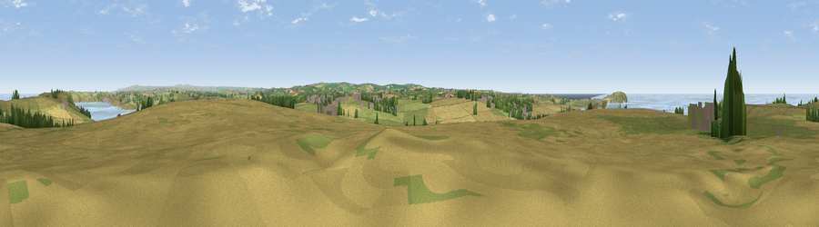

Crugmeer Hill
#7002 in England · top 18% of its area beats it · near TrevoneThe view, rendered

A 360° render of this exact spot computed from the terrain model, tree cover and land cover — summer colours, afternoon light, calibrated against photographs of famous viewpoints. Real trees, hedges and buildings will differ in detail.
The panorama
Grey silhouette: terrain skyline in each direction (720 bearings, Earth curvature and refraction included). Dashed green: skyline with trees (+15 m) and buildings (+8 m) as obstacles. Blue strip: how far the ground is visible on each bearing.
Where the view opens
Wedge length = distance to the farthest visible ground on that bearing (vegetation-aware). Rings at 10, 25 and 50 km.
What fills the view
41% grassland · 41% cropland · 13% water · 3% woodland · 2% built-up
Angular shares of the visible panorama (visual magnitude), not map area. Landscape diversity 0.52 (0–1 Shannon).
Key numbers
More beautiful places nearby
The staircase of upgrades: each row has a higher view potential than everything closer. Driving times are estimates from straight-line distance, calibrated against real road routing — check an actual route before setting out.
| Place | Direction | Drive | Score |
|---|---|---|---|
| Viewpoint near Trevone | NW · 1 km | ~3 min | 69.1 |
| Viewpoint near Trevone | NNE · 1 km | ~4 min | 72.3 |
| Viewpoint near New Polzeath | NNE · 5 km | ~12 min | 75.8 |
| Viewpoint near Port Isaac | NE · 8 km | ~17 min | 76.5 |
| Viewpoint near St Eval | S · 9 km | ~18 min | 78.3 |
| Viewpoint near Port Isaac | ENE · 13 km | ~24 min | 79.7 |
| Penhale Hill | S · 19 km | ~33 min | 80.3 |
| Viewpoint near Roche | SSE · 20 km | ~34 min | 80.9 |
50.54898, -4.96182 · source: dobih hill · position refined by local search. Computed location — check access rights before visiting.